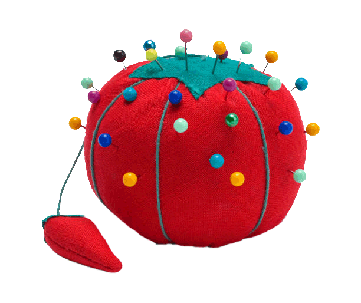

<div class="wrap">
  
</div>

<style>
  .wrap {
    height: 100vh;
    display: flex;
    justify-content: center;
    align-items: center;
    overflow: hidden;
  }

  #stretch {
    width: 240px;
    cursor: pointer;
    display: block;
    transform-origin: center;
    will-change: transform;
  }
</style>

<script>
  const img = document.getElementById("stretch");

  let running = false;
  let lastTime = null;

  // Animation progress from 0 → 1
  let progress = 0;

  const maxWidthPx = 9200;
  const duration = 7000; // ms (total time to reach max width)

  // Smooth ease-in-out function (nice and simple)
  function easeInOutCubic(t) {
    return t < 0.5
      ? 4 * t * t * t
      : 1 - Math.pow(-2 * t + 2, 3) / 2;
  }

  function animate(t) {
    if (!running) return;

    if (lastTime === null) lastTime = t;
    const dt = t - lastTime;
    lastTime = t;

    // progress grows based on duration
    progress = Math.min(1, progress + dt / duration);

    const eased = easeInOutCubic(progress);

    // Compute the scale needed to hit maxWidthPx
    const baseWidth = img.offsetWidth;              // starting width in px
    const maxScale = maxWidthPx / baseWidth;        // scale needed to reach 1200px
    const scaleX = 1 + (maxScale - 1) * eased;      // eased scale from 1 → maxScale

    img.style.transform = `scaleX(${scaleX})`;

    // Stop at the end (ease-out finishes cleanly)
    if (progress >= 1) {
      running = false;
      return;
    }

    requestAnimationFrame(animate);
  }

  img.addEventListener("click", () => {
    running = !running;

    if (running) {
      lastTime = null;
      requestAnimationFrame(animate);
    }
  });
</script>
